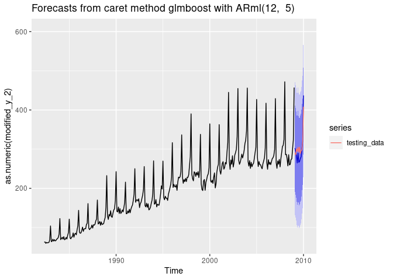
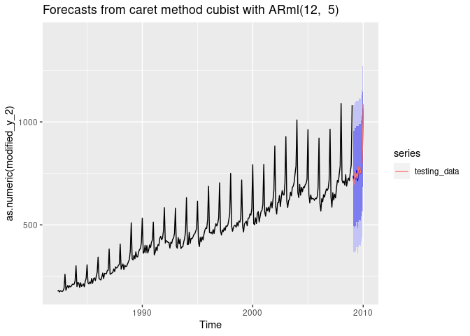
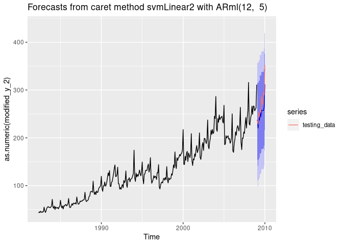
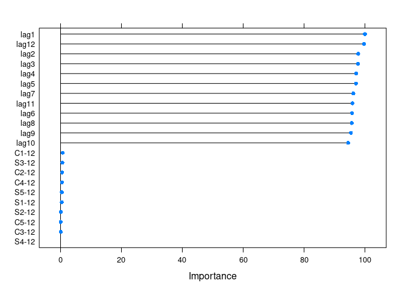
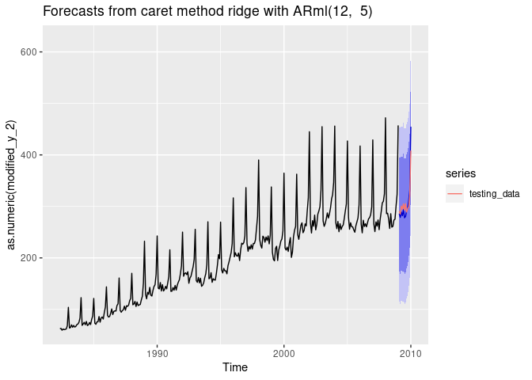
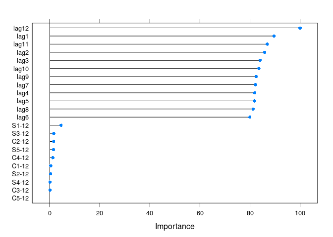

The goal of caretForecast is to provide tools for forecasting time series data using various machine learning algorithms. (More details will follow…)
Installation
The development version from GitHub with:
# install.packages("devtools")
devtools::install_github("Akai01/caretForecast")Example
Note: User can train any caret supported regression model.
These are basic examples which shows you how to solve common problems with different ML models.
library(caretForecast)
#> Registered S3 method overwritten by 'quantmod':
#> method from
#> as.zoo.data.frame zoo
library(forecast)
# Forecasting Retail Data with glmboost
data(retail_wide, package = "caretForecast")
i <- 8
dtlist <- caretForecast::split_ts(retail_wide[,i], test_size = 12)
training_data <- dtlist$train
testing_data <- dtlist$test
fit <- ARml(training_data, max_lag = 12, caret_method = "glmboost",
verbose = FALSE)
#> Loading required package: lattice
#> Loading required package: ggplot2
forecast(fit, h = length(testing_data), level = c(95,80))-> fc
accuracy(fc, testing_data)
#> ME RMSE MAE MPE MAPE MASE
#> Training set 0.8868074 16.39661 11.65025 -0.3620986 5.702257 0.7559694
#> Test set 8.3976171 20.15546 17.20306 3.0153042 5.572722 1.1162843
#> ACF1 Theil's U
#> Training set 0.5707204 NA
#> Test set 0.3971016 0.7547318
fc_plot(fc) +
autolayer(testing_data, series = "testing_data")
## NOTE : Promotions, holidays, and other external variables can be added in the model via xreg argument. Please look at the documentation of ARml.
# Forecasting Retail Data with cubist regression
i <- 9
data(retail_wide, package = "caretForecast")
dtlist <- caretForecast::split_ts(retail_wide[,i], test_size = 12)
training_data <- dtlist$train
testing_data <- dtlist$test
fit <- ARml(training_data, max_lag = 12, caret_method = "cubist",
verbose = FALSE)
forecast(fit, h = length(testing_data), level = c(95,80))-> fc
accuracy(fc, testing_data)
#> ME RMSE MAE MPE MAPE MASE
#> Training set 0.3452345 16.39877 12.22406 -0.08475644 2.533889 0.4073634
#> Test set 2.5562312 14.21461 12.39887 0.24907619 1.592606 0.4131888
#> ACF1 Theil's U
#> Training set 0.2309758 NA
#> Test set -0.1450719 0.1701567
fc_plot(fc) +
autolayer(testing_data, series = "testing_data")
# Forecasting using Support Vector Machines with Linear Kernel
data(retail_wide, package = "caretForecast")
i <- 7
dtlist <- caretForecast::split_ts(retail_wide[,i], test_size = 12)
training_data <- dtlist$train
testing_data <- dtlist$test
fit <- ARml(training_data, max_lag = 12, caret_method = "svmLinear2",
verbose = FALSE)
forecast(fit, h = length(testing_data), level = c(95,80))-> fc
accuracy(fc, testing_data)
#> ME RMSE MAE MPE MAPE MASE
#> Training set 0.3016388 6.933042 4.969558 -0.1057475 3.724202 0.3209987
#> Test set 16.6048808 20.812588 16.846600 5.7734741 5.875854 1.0881725
#> ACF1 Theil's U
#> Training set 0.06480896 NA
#> Test set 0.33020419 0.884742
fc_plot(fc) +
autolayer(testing_data, series = "testing_data")
get_var_imp(fc)
get_var_imp(fc, plot = F)
#> loess r-squared variable importance
#>
#> only 20 most important variables shown (out of 22)
#>
#> Overall
#> lag1 100.00000
#> lag12 99.74827
#> lag2 97.78807
#> lag3 97.74610
#> lag4 97.10962
#> lag5 97.08285
#> lag7 96.20291
#> lag11 95.90430
#> lag6 95.80115
#> lag8 95.68963
#> lag9 95.38585
#> lag10 94.50733
#> C1-12 0.68853
#> S3-12 0.60001
#> C2-12 0.50234
#> C4-12 0.44290
#> S5-12 0.41720
#> S1-12 0.40638
#> S2-12 0.09599
#> C5-12 0.05234
# Forecasting using Ridge Regression
data(retail_wide, package = "caretForecast")
i <- 8
dtlist <- caretForecast::split_ts(retail_wide[,i], test_size = 12)
training_data <- dtlist$train
testing_data <- dtlist$test
fit <- ARml(training_data, max_lag = 12, caret_method = "ridge",
verbose = FALSE)
forecast(fit, h = length(testing_data), level = c(95,80))-> fc
accuracy(fc, testing_data)
#> ME RMSE MAE MPE MAPE MASE
#> Training set 0.1414756 8.88367 6.44208 -0.0953757 3.126316 0.4180182
#> Test set 0.9965672 17.71459 13.30744 0.7019753 4.092068 0.8635023
#> ACF1 Theil's U
#> Training set 0.004518837 NA
#> Test set 0.389409945 0.6513039
fc_plot(fc) +
autolayer(testing_data, series = "testing_data")
get_var_imp(fc)
get_var_imp(fc, plot = F)
#> loess r-squared variable importance
#>
#> only 20 most important variables shown (out of 22)
#>
#> Overall
#> lag12 100.00000
#> lag1 89.57697
#> lag11 86.89260
#> lag2 85.81967
#> lag3 84.07269
#> lag10 83.53358
#> lag9 82.52774
#> lag7 82.18917
#> lag4 81.93730
#> lag5 81.85290
#> lag8 81.22696
#> lag6 79.96364
#> S1-12 4.51371
#> S3-12 1.59063
#> C2-12 1.54661
#> S5-12 1.53004
#> C4-12 1.24044
#> C1-12 0.38784
#> S2-12 0.35446
#> S4-12 0.07244